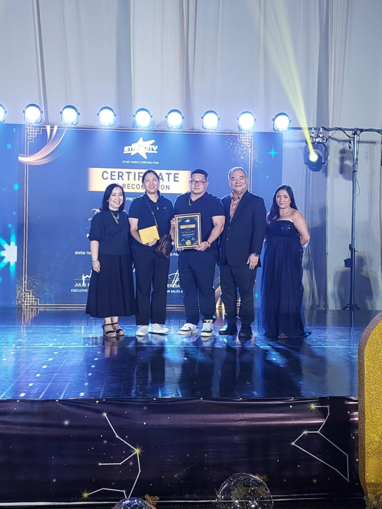
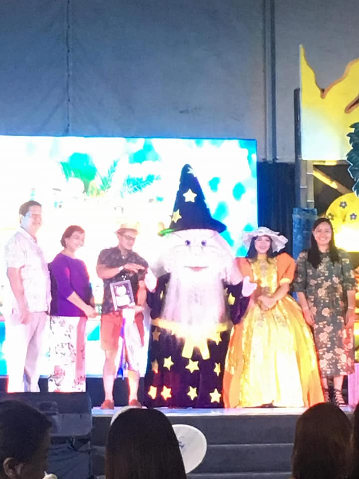
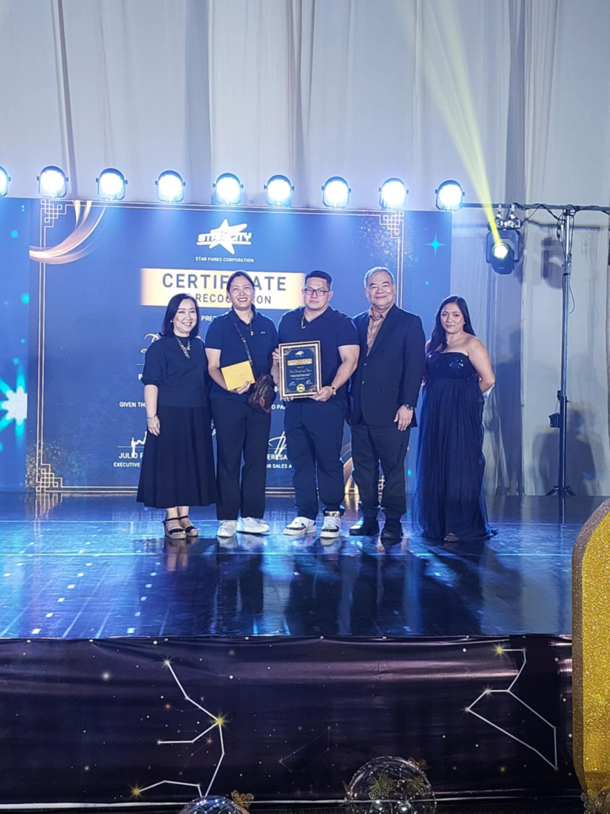
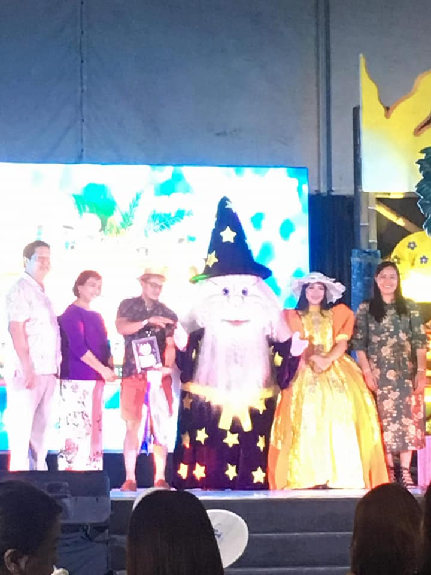

COMPANY PROFILE:
DAL TRAVELS AND TOURS is an innovating chartering agency whose aim is
to provide the highest quality of services that will surely fit to the budget
of all customers.
Our main activities includes educational fieldtrips, corporate outing retreats
seminars team building activities, hotel and resort familiarization, transport
services, Island packages tours and airline ticketing.
Dal Travels and Tours is also a member of Tour Promoter of the Philippines Association (TOPROPHIL).
Dal Travels and Tours is accredited to the following venues.
Manila Ocean Park, Enchanted Kingdom, Ark Avilon, Avilon Zoo, Villa Escudero, Gardenia,
Bakeries, Grand Villa Resort, Monde Nissin Factory, Bio Research, Cosmic Kidz, Davao Crocodile
Royale, DOST Heritage Museum, Goldilocks, Jardine de Miramar, Mind Museum, Star City, Subic Safari,
Ocean Adventure, Zoocobia, Meralco Museum, and archives, KKK Museum, Jest Camp,
Dinosaur Island, and many more


"Awards and Recognition"


|  |  |
|---|
|
|
|
|
|
|
|---|